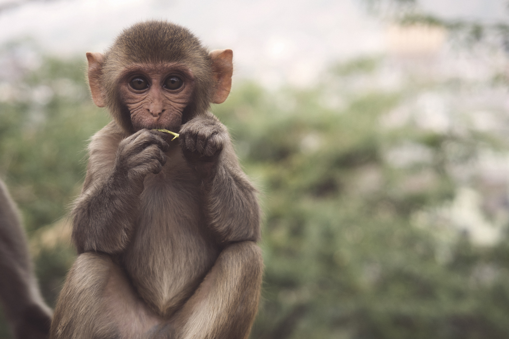

Animais Fantásticos


- 

Raposa
Raposas são pequenos a médios mamíferos onívoros pertencentes a vários gêneros da família Canidae. As raposas têm o crânio achatado, orelhas triangulares verticais, focinho pontiagudo e ligeiramente arrebitado e uma cauda longa e espessa.
Doze espécies pertencem ao grupo monofilético de "raposas verdadeiras" do gênero Vulpes. Aproximadamente outras 25 espécies atuais ou extintas são parte do grupo parafilético das raposas sul-americanas ou do grupo periférico, que consiste na raposa-orelhas-de-morcego, raposa-cinzenta e raposa-das-ilhas.[1]
As raposas vivem em todos os continentes, exceto a Antártida. De longe, a espécie mais comum e difundida de raposa é a raposa vermelha (Vulpes vulpes) com cerca de 47 subespécies reconhecidas.[2] A distribuição global das raposas, juntamente com sua ampla reputação de astúcia, contribuíram para sua proeminência na cultura popular e no folclore em muitas sociedades ao redor do mundo
A caça à raposa com matilhas de cães, há muito uma atividade estabelecida na Europa, especialmente nas Ilhas Britânicas, foi exportada por colonos europeus para várias partes do Novo Mundo.
Esquilo
Os esquilos pertencem a uma grande família de mamíferos roedores, de pequeno e médio porte, conhecida como Sciuridae.
No Brasil, são também conhecidos como serelepe, caxinguelê, caxinxe, quatimirim, quatipuru, agutipuru ou acutipuru.Na Galiza e em algumas zonas de Portugal, também é conhecido por esquilo.
Os esquilos estão espalhados por quase todo o mundo, a maioria nas zonas de climas temperado ou tropical, mas
também em algumas zonas de clima frio. Como todos os roedores, possui presas fortíssimas, com que roem facilmente
sementes, principalmente bolotas.
As sementes são as principais fontes de alimentação, mas também consomem insetos e frutas. Quando coletam alimento, enterram algumas sementes que encontram, sendo que algumas chegam a germinar, como pinhões e coquinhos, acabando por plantar árvores como araucária e jerivá.
Urso
Os Ursos (latim científico: Ursidae) constituem uma família de mamíferos plantígrados, da ordem Carnivora, geralmente de grande porte, contendo os ursos e os pandas.
Embora classificado como urso, e logo após, como procionídeo, junto com o panda-vermelho, o panda-gigante foi recolocado dentro da família dos ursídeos devido às novas pesquisas genéticas.
Algumas características comuns dos ursos são pelagem espessa, rabo curto, o olfato desenvolvido e as garras não
retráteis. Os ursídeos são geralmente animais omnívoros, mas se alimentam principalmente de carne.
As espécies mais antigas e primitivas desta família estão reunidas no gênero Ballusia, do Mioceno Inferior, que ainda retêm características similares aos Hemicyonidae. Do Ballusia descende o gênero Ursavus, fonte dos ursíneos, e talvez o Agriarctos, ancestral dos agrioteríneos.
Lobo
O lobo é uma espécie de mamífero canídeo do gênero Canis. É um sobrevivente da Era do Gelo, originário do Pleistoceno Superior, cerca de 300 mil anos atrás. Está dividido em 4 espécies: lobo-cinzento (Canis lupus), lobo-dourado (Canis anthus), lobo-vermelho (Canis rufus) e lobo-etíope (Canis simensis), embora os cientistas atualmente debatam se o lobo-etíope seria um verdadeiro lobo ou um membro da família dos chacais-dourados
Dessas espécies, o lobo-cinzento é a maior delas e também de todos os membros remanescentes selvagens da família canidae.[3] O sequenciamento de DNA e estudos genéticos reafirmam que o lobo-cinzento é ancestral do cão doméstico (Canis lupus familiaris), contudo alguns aspectos desta afirmação têm sido questionados recentemente
Uma série de outras subespécies do lobo-cinzento foram identificadas, embora o número real de subespécies ainda
esteja em discussão. Os lobos-cinzentos são tipicamente predadores ápice nos ecossistemas que ocupam.
Embora não sejam tão adaptáveis à presença humana como geralmente ocorre com as demais espécies de canídeos,[4] os lobos se desenvolveram em diversos ambientes, como florestas temperadas, desertos, montanhas, tundras, taigas, campos e até mesmo em algumas áreas urbanas
Macaco
Macaco é um termo de origem africana (provavelmente do banto makako)[1] utilizado como designação comum a todas as espécies de símios ou primatas antropoides. É aplicada restritivamente no Brasil aos cebídeos (ou macacos do Novo Mundo) em geral. No sentido estrito, "macaco" refere-se às espécies de primatas pertencentes ao género Macaca.
A designação mico se origina, segundo o Dicionário Aurélio,[2] do caraíba (karib) continental. É bastante usada no Brasil, onde costuma aplicar-se às espécies do gênero Cebus, no Sul, e às espécies de pequeno porte, ou saguis, no Norte.
O termo sagui se origina do tupi antigo sagûi e também designa os macacos calitriquídeos de pequeno porte.
Ainda segundo Cunha,[4] o termo símio, que também designa os macacos (tendo sido registrado no português dos séculos XVI e XVII), vem do latim simius, de simus, "que tem o nariz chato".
Leão
O leão [feminino: leoa] (nome científico: Panthera leo) é uma espécie de mamífero carnívoro do gênero Panthera e da família Felidae.
espécie é atualmente encontrada na África subsaariana e na Ásia, com uma única população remanescente em perigo, no Parque Nacional da Floresta de Gir, Gujarat, Índia
Foi extinto na África do Norte e no Sudoeste Asiático em tempos históricos, e até o Pleistoceno Superior, há cerca de 10 000 anos, era o mais difundido grande mamífero terrestre depois dos humanos, sendo encontrado na maior parte da África, em muito da Eurásia, da Europa Ocidental à Índia, e na América, do Yukon ao México
É uma dos quatro grandes felinos, com alguns machos excedendo 250 quilogramas em peso, sendo o segundo maior felino recente depois do tigre.